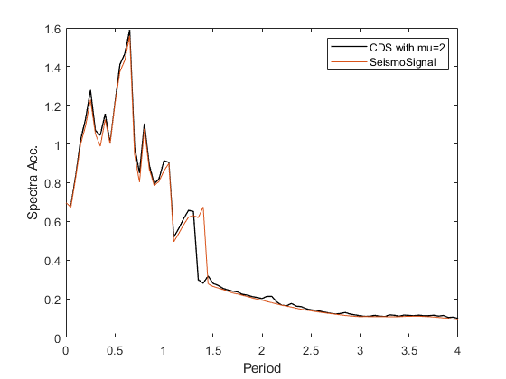
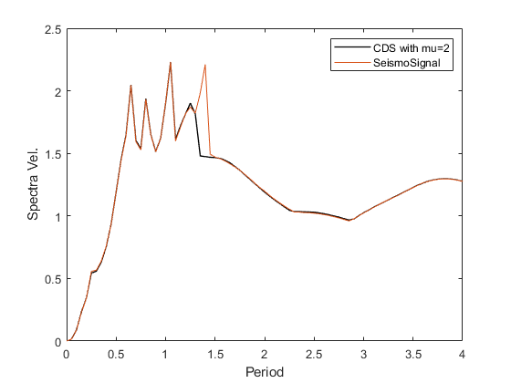
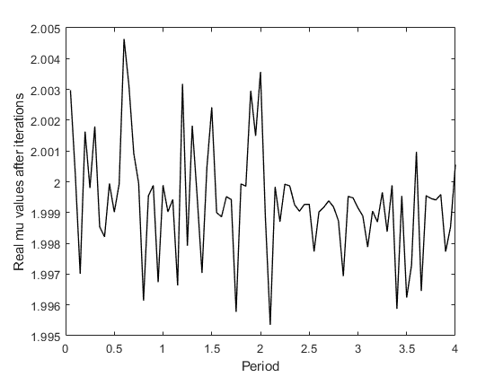

example Comparison of constant ductility response spectra of RSN1044 for mu=2
Contents
Input
Earthquake motions
GMFileLoc = 'input\';
A text file containing the lists of GM names
RecordList = ['input\Record_List.txt'];
Read E.Q. records name from the specifid list
fid = fopen (RecordList,'r'); records = textscan(fid, '%s'); % length = num of records*1, cell fclose (fid);
Read E.Q. records name from the specifid list Return variables include record names, dt, num of points, PGA, Acc TH, Spectral Acc The accelration-related variables (PGA, Sa, Acc TH) are in unit of g; disp-related in m If you do not specify scaling factors at this step, the default value = 1 for each GM
[RecordName_all, dt, numPoint_all, PGA_all, xgtt] =...
fn_ParseAT2File2(GMFileLoc, records);
Set the eigenperiod range for which the response spectra will be calculated.
Tspectra=(0.05:0.05:4)';
Set critical damping ratio of the response spectra to be calculated.
ksi=0.02;
Results from OpenSeismoMatlab
Set the target ductility
mu=2; % mu=1 equivalent to a linear SDoF
Extract constant ductility response spectra
sw='cdrs';
Calculation CDRS{i}=[S.Period,S.CDSd,S.CDSv,S.CDPSa,S.fyK,S.muK,S.iterK];
S1=OpenSeismoMatlab(dt,xgtt{1},sw,Tspectra,ksi,mu);
Results from SeismoSignal
fileID = fopen('input/RSN1044_Damping2.txt'); for idx = 1:5 fgetl(fileID); end C = textscan(fileID,repmat('%f',1,15)); fclose(fileID);
Output
Plot spectral acceleration response spectra
figure() plot(S1.Period,S1.CDSa/9.8,'k','LineWidth',1); hold on %plot(S2.Period,S2.Sa,'r','LineWidth',1); plot(C{1},C{3}) legend('CDS with mu=2','SeismoSignal'); xlabel('Period'); ylabel('Spectra Acc.') hold off drawnow; pause(0.1)
Plot spectral velocity response spectra
figure() plot(S1.Period,S1.CDSv,'k','LineWidth',1); hold on %plot(S2.Period,S2.Sa,'r','LineWidth',1); plot(C{1},C{7}/100) legend('CDS with mu=2','SeismoSignal'); xlabel('Period'); ylabel('Spectra Vel.') hold off drawnow; pause(0.1)
Plot spectral displacement response spectra
figure() plot(S1.Period,S1.CDSd,'k','LineWidth',1); hold on %plot(S2.Period,S2.Sa,'r','LineWidth',1); plot(C{1},C{11}/100) legend('CDS with mu=2','SeismoSignal'); xlabel('Period'); ylabel('Spectra Disp.') hold off drawnow; pause(0.1)
Plot the achieved ductility for each eigenperiod. It should be equal or close to the target ductility mu=2
figure() plot(S1.Period,S1.muK,'k','LineWidth',1); xlabel('Period'); ylabel('Real mu values after iterations') drawnow; pause(0.1)
Copyright
Copyright (c) 2018-2023 by George Papazafeiropoulos
- Major, Infrastructure Engineer, Hellenic Air Force
- Civil Engineer, M.Sc., Ph.D.
- Email: gpapazafeiropoulos@yahoo.gr